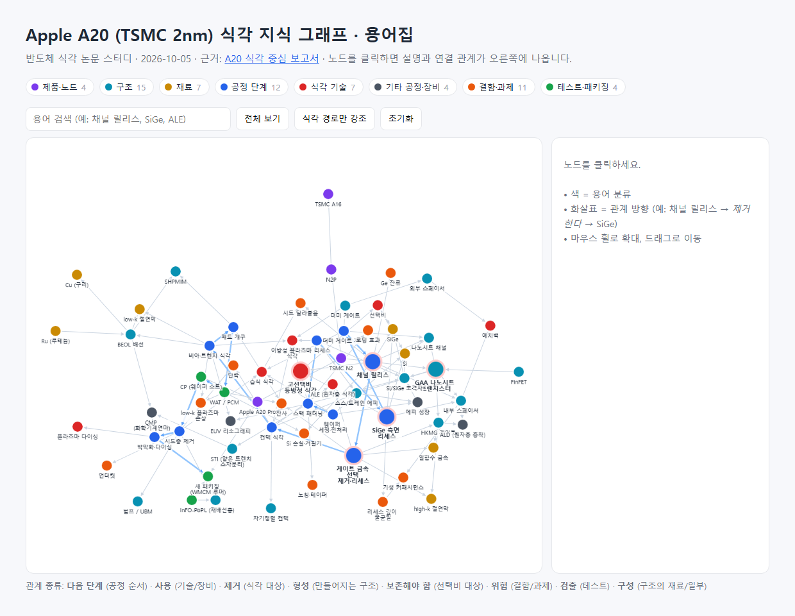
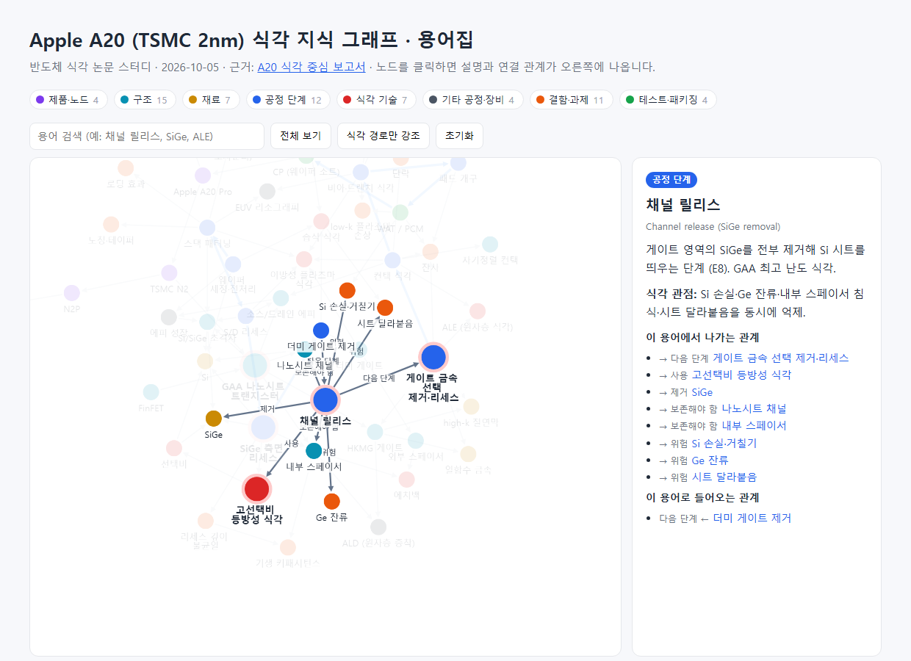

#9
TSMC 2nm · A20 공정 리서치 시작
지시 (원문)
TSMC 2nm A20 공정 관련 정보를 알고 싶다. Wafer IN 부터 Wafer OUT 까지. 전/후공정 모두 포함.
분석 (Claude의 정리)
- 리서치 요청 → 규칙에 따라
gpt-6-astra high를 웹 검색과 함께 백그라운드로 호출.
- 'A20'은 TSMC 노드 이름이 아니므로 뜻을 판단해야 함 → jev에게 자문.
- 범위: 웨이퍼 입고 → FEOL → MOL → BEOL → 웨이퍼 테스트 → 범핑·다이싱·패키징 → 최종 테스트·출하.
과정
- astra(high, 웹 검색)에게 리서치 요청을 백그라운드로 보냄. 요청: 용어 정리, N2 사양·팹·양산 시점, 전공정 단계별 흐름과 단계별 식각 과제, 웨이퍼 테스트·수율, 후공정·패키징, 요약표, 확인/추정/루머 구분, 출처.
- jev 자문 (리서치를 기다리는 동안):
- 'A20'의 뜻 → Apple A20 칩 (확률 0.99)
- 보고서 무게중심 → 식각 위주 (0.93)
- 시작 전에 사용자 확인이 필요한가 → 0.91 (필요)
- jev 의견 반영: 리서치에 용어 정리가 이미 들어 있어 진행은 계속하고, 사용자에게 A20의 뜻을 확인하기로 함.
결과 / 증거
진행 리서치는 백그라운드에서 진행 중. 결과는 #11 항목 참고.
#10
A20 = Apple A20 칩, 식각 위주로 확정
지시 (원문)
Apple A20 칩 맞아. 식각 위주로 정리해줘.
분석 (Claude의 정리)
- jev의 판단(Apple A20 칩, 식각 위주)을 사용자가 그대로 확인함.
- 보고서는 전체 흐름을 다루되 식각 공정을 자세히 쓴다.
과정
- 리서치 진행 상황 확인 — astra가 웹 검색 중.
#11
A20 식각 중심 보고서 완성
지시 (원문)
결과 나오면 보고서랑 history 정리해줘
분석 (Claude의 정리)
- 리서치 결과가 나오면 식각 중심의 보고서를 만들고, history.html에 이 과정을 정리한다.
과정
- astra 리서치 완료 (약 10분, 웹 검색 44회, 출처 32개). 원문 저장:
research/tsmc_n2_a20_raw.md.
- 내용 검토 — 확인/추정/루머/미공개 표시가 잘 되어 있음. 핵심 주장 하나를 Claude가 직접 대조: Apple 발표 원문에서 "2-nanometer process"와 "die side by side with the memory" 문장 확인 → 일치.
- 식각 중심 보고서 작성:
research/tsmc_n2_a20_etch_report.html.- 전체 흐름 지도에 식각 단계 강조
- GAA 핵심 식각 3장면 단면 그림 (S/D 리세스 → 내부 스페이서 → 채널 릴리스)
- 전공정 식각 12단계(E1~E12), 후공정 식각 3단계(B1~B3) 상세
- 요약표, 확인 수준 정리, 출처 32개
- 식각 논문 스터디로 이어갈 주제 7가지 (Claude 제안)
- 보고서를 브라우저로 열어 스크린샷 저장.
- 민감정보 검사 → 검출 없음.
#12
주요 용어집 · 식각 지식 그래프 제작
지시 (원문)
주요 용어 함께 정리하고 관련 지식을 Graph Knowledge로 표현 하고 싶어.
분석 (Claude의 정리)
- A20 식각 보고서에 나온 주요 용어를 정리한다.
- 용어끼리의 관계(공정 순서, 어떤 식각을 쓰는지, 무엇을 제거·보존하는지, 어떤 결함이 생기는지)를 지식 그래프로 보여준다.
- 형태·배치는 판단이 필요한 부분이라 jev에게 자문한다.
과정
- jev 자문:
- 배치 → 별도 페이지로 만들고 보고서와 서로 링크 (확률 0.78)
- 형태 → 인터랙티브 그래프 (클릭하면 설명, 확대·이동·필터) (1.00)
- 구조 → 식각 중심: 공정 단계·식각 기술·재료·구조·결함을 노드로, "사용/제거/위험" 같은 관계를 연결선으로 (0.99)
→ 세 가지 모두 그대로 반영.
- 지식 그래프 페이지 작성:
research/a20_etch_knowledge_graph.html
- 용어 64개를 8가지로 분류: 제품·노드, 구조, 재료, 공정 단계, 식각 기술, 기타 공정·장비, 결함·과제, 테스트·패키징
- 관계 109개: 다음 단계, 사용, 제거, 형성, 보존해야 함, 위험, 검출, 구성 등
- 노드를 클릭하면 설명, 식각 관점, 들어오고 나가는 관계가 표시됨. 분류 필터, 검색, "식각 경로만 강조" 기능 포함
- 아래쪽 용어집 표(영문 표기, 설명, 식각과의 관계)는 그래프와 같은 데이터를 씀. 용어를 클릭하면 그래프의 해당 노드로 이동
- 데이터 검증 — 모든 관계가 실제 있는 용어를 가리키는지, 연결이 없는 용어는 없는지 확인 → 문제 없음.
- 기존 보고서 상단에 지식 그래프 링크 추가. 주소 끝에
#용어id를 붙이면 그 용어에 바로 포커스되는 기능 추가 (예: #s_release).
- 첫 스크린샷에서 그래프 가운데가 너무 빽빽함 → 노드 간격을 넓혀 다시 촬영.
- 민감정보 검사 → 검출 없음.
결과 / 증거
성공 용어집과 인터랙티브 식각 지식 그래프 완성.
지식 그래프 열기 → research/a20_etch_knowledge_graph.html

history_img/20261005_211850_knowledge_graph.png — 전체 그래프 (색 = 용어 분류)

history_img/20261005_211825_knowledge_graph_focus_release.png — "채널 릴리스"를 클릭한 화면: 제거 대상(SiGe), 보존 대상(나노시트, 내부 스페이서), 위험(Si 손실, Ge 잔류, 시트 달라붙음)